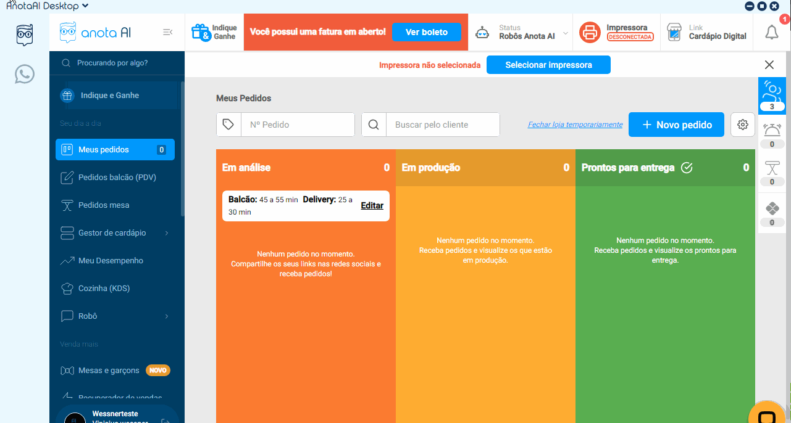

Você reiniciou o programa?
Acessando o computador do cliente diretamente no sistema anota ai, vá até canto superior esquerdo aonde está escrito "anota ai desktop" > clieque e após clique em reiniciar

Proximo passo